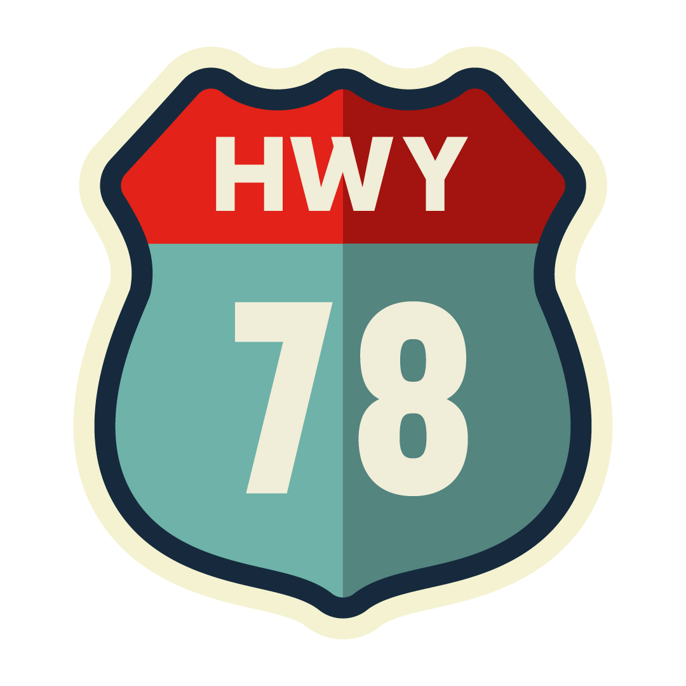
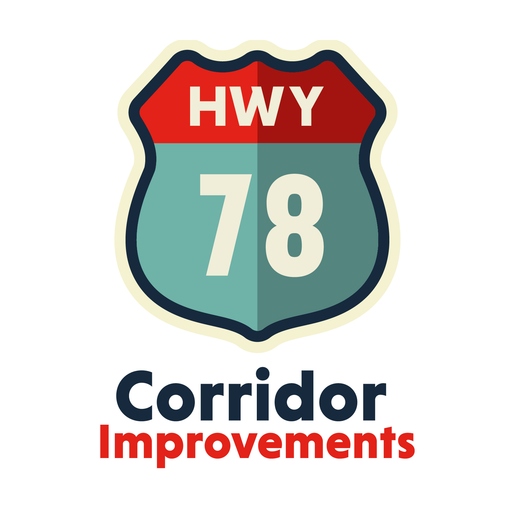

US78
Corridor
Identity and promotional campaign for a public corridor improvement project — signs, brochures, flyers, and multi-channel rollout.

Identity and promotional campaign for a public corridor improvement project — signs, brochures, flyers, and multi-channel rollout.
A county-level corridor improvement project needed public buy-in — but infrastructure upgrades don't sell themselves. Construction means detours, delays, and frustrated commuters. Without a clear identity and communication strategy, the project risked being seen as an inconvenience instead of an investment.
I developed the brand identity for the US78 Corridor project and rolled it out across signage, brochures, flyers, and multi-channel promotional materials. The identity needed to do two things at once: establish legitimacy and build public support. Clean, confident design and consistent branding across every touchpoint turned a construction project into something the community could track, understand, and get behind.

